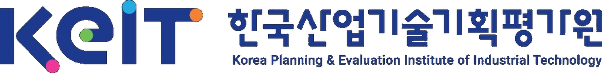

| 지표 | 수집 구간 | 등급 |
|---|---|---|
| 적합성 | 평가자 후보 | S |
| 성실성 | 평가 수행 | A |
| 공정성 | 평가 이전 | B |
| 신뢰성 | 사후 평가 | A |
| 타율 | 사업화 | A |
| 지표 | 종합 등급 | 현황 및 판단 내용 |
|---|---|---|
|
적합성
기술분야 일치
전공·학위 연관 유사 경험 |
적합 | 기술분야 및 전공이 평가 과제와 일치하며, 유사 과제 평가 2회와 재단 사업 평가 3회 경험이 확인됩니다. 섭외 시 전문성 근거 자료로 활용할 수 있습니다. |
|
성실성
의견 작성량
판단 근거 구체성 점수-의견 정합 |
양호 | 평가서 의견 작성량이 동 분야 평균 대비 128% 수준이며 판단 근거 구체성은 상(上) 등급입니다. 점수와 의견 간 정합성이 양호하고 평가 소요 시간은 평균 수준으로 특이사항이 없습니다. |
|
공정성
제척 사유
관계성 검토 확인 가능 범위 |
주의 | 자료 검토 결과 동일 기관·학력·경력 관계 제척 사유는 확인되지 않았습니다. 다만 개인적 지인 관계는 자료상 확인 불가 범위에 해당하므로 평가위원 서약 및 구두 확인을 병행하도록 권고합니다. |
|
신뢰성
재단 참여 횟수
간사·위원장 평가 반복 안정성 |
양호 | 재단 사업 평가에 총 3회 참여한 이력이 확인되며, 간사 참고 의견은 긍정적으로 기록되어 있습니다. 반복 평가 시 점수 패턴이 안정적으로 유지되어 내부 신뢰도가 높습니다. |
|
타율
고평가→성과
저평가→낮은성과 예측력 일관성 |
검토 중 | 과거 고평가 과제 5건 중 1건의 사업화 성과가 확인되어 현재 타율은 20%로 산출됩니다. 단, 성공의 기준과 기간이 아직 확정되지 않은 상태이므로 추가 검토를 거쳐 최종 수치가 확정됩니다. |